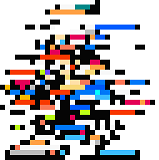

Eigen Man

Having fun using Principal Component Analysis and
Mega Man!
by willkurt
Markov Man and the essence of Mega Man
For a long time I’ve been fascinated by how much detail is in simple sprites from the 8-bit video games I grew up with. I’d always been particularly fond of Mega Man. A few years back I wanted to see if I could figure out a way to computationally capture the essence of what all these sprites had in common. My first experiment was a small Processing program I called “Markov Man” which used a Markov chain to generate original Mega Man boss sprites from a corpus of 32x32 boss sprites.
As you can see the Markov Man experiment lead to some interesting, but pretty incomprehensible output.
Revisiting with computer vision
Over the holiday I was gifted a copy of Programming Computer Vision with Python. I’ve done a fair bit of data mining/machine learning work recently but have never really taken the time to learn much in the area of computer vision. The book starts out with a great discussion on both principal component analysis and simply using the mean of a matrix of flattened images in order to approach the same problem I had looked at years ago. I also had previously come across work on Eigenfaces and thought it would be fun to apply the same idea to Mega Man sprites.
Setup and prep
Like most machine learning tasks, be it nlp or cv, the first thing I was going to need was a corpus of Mega Man sprites. And just like all interesting data projects, this was the tedious a time consuming part. I started with sprite sheets from Sprites Inc and put together a set of around 70 sprites that were roughly centered and were all 32x32 pixels. Some Mega Man character sprites fit nicely into this space but others require a bit of guessing to find a good place to crop.


The next step was to automatically convert these images to grayscale using the Python Imaging Library (PIL). This was necessary since the color data really ends up adding a lot of noise to what we’re trying to discover. Doing this with PIL was dead simple
Image.open(infile).convert('L').save(outfile)


The key to processing the images from here on is just to think of a 2 dimensional grayscale picture as a single vector of grayscale values. Seeing an image as being a 32x32 matrix is essential for humans to understanding what the image is, but from a computational standpoint a single 1024 element vector is the same information. This allows us to create a single matrix which contains n rows of and 1024 columns (where n is the number of sprites we have).
for sprite in sprite_files:
i = array(Image.open(sprite)).flatten()
images.append(i)
I = array(images)
Using a few basic functions and data structures from Numpy it is very easy to create our matrix of Mega Man sprites.
Principal component analysis and Eigen Man
Okay now that we have a matrix this problem can be treated just like any other machine learning problem! To get the ‘essence’ of all the Mega Man sprites I use Principal Component Analysis (PCA). The most high level way to understand PCA is that it allows us to project a higher dimensionality space into a lower one. What we end up with are ‘Principal Components’ which tell us the fundamental directions of the matrix in decreasing order of importance. In short, this is exactly what I wanted in the first place, this will provide me with the ‘essence’ of the corpus of megaman sprites.
U,S,V = linalg.svd(I)
To perform PCA I’m just using a technique from linear algebra called ‘Singular Value Decomposition’ (SVD). This operation gives us a bunch of data but what we really care about are the values in V (which are the eigenvectors of the covariance matrix ordered by their eigenvalues, which is more than you probably want to know if you don’t already understand pca). V is a matrix of our principal components in order or importance.
image_scaled = (abs(V[0]/max(abs(V[0])))*255)
We have to do a little trick to coax the principal component into a sane image, but once we do we can see what "Eigen Man" looks like (scaled up so you can see him better)!
here's what first 4 principal components actually look like:


and here they are blown up a bit


Clearly as we move away from the first we start to get stranger results, but it's interesting to see what the PCA did to our original matrix of data.
Simpler can be better (or at least just as good)
Of course, while PCA is cool and all, what would have happened if we had done something much simpler and more obvious? For example taking the mean of each row in our matrix:
mean_image = Image.fromarray(reshape(I.mean(axis=0),[m,n]))Well it turns out that the "Mean Man" is pretty darn close to what we got using PCA

So perhaps the best take away from this experiment is to always try the simplest solution first and see what you get. I’ve certain found that to be a surprisingly consistent truth wherever I’ve been doing any machine learning or data mining work.
Improvement?
I just wanted to make a note that the best way to improve this would be to be more selective about about how the sprites were aligned. For example, it is clear that I aligned the feet more closely than the face. Playing with the sprite alignment would be the best way to get a better Eigen Man.
This project is maintained by willkurt
twitter: @willkurt
"Mega Man" and all associated game sprites are copyright Capcom Co. Ltd
Hosted on GitHub Pages — Theme by orderedlist